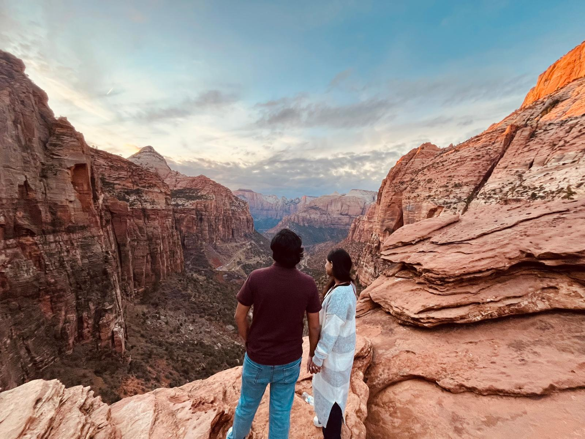
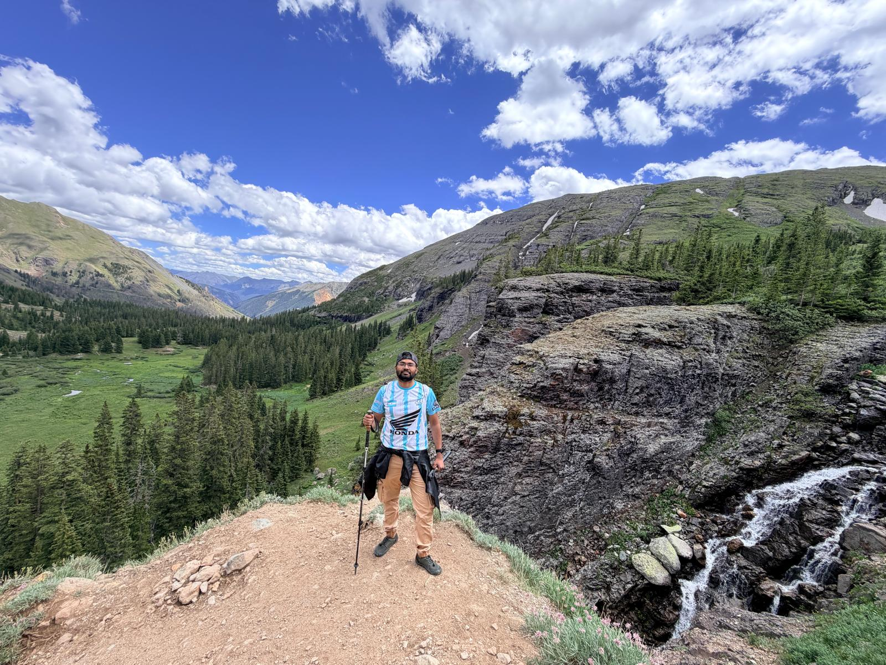
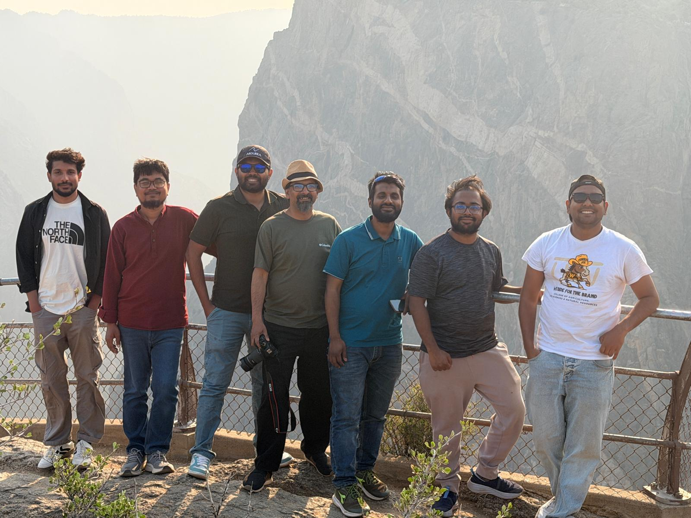
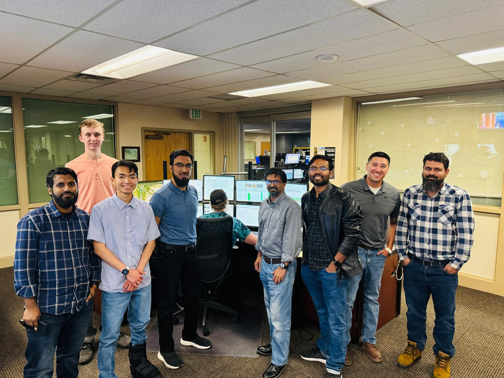
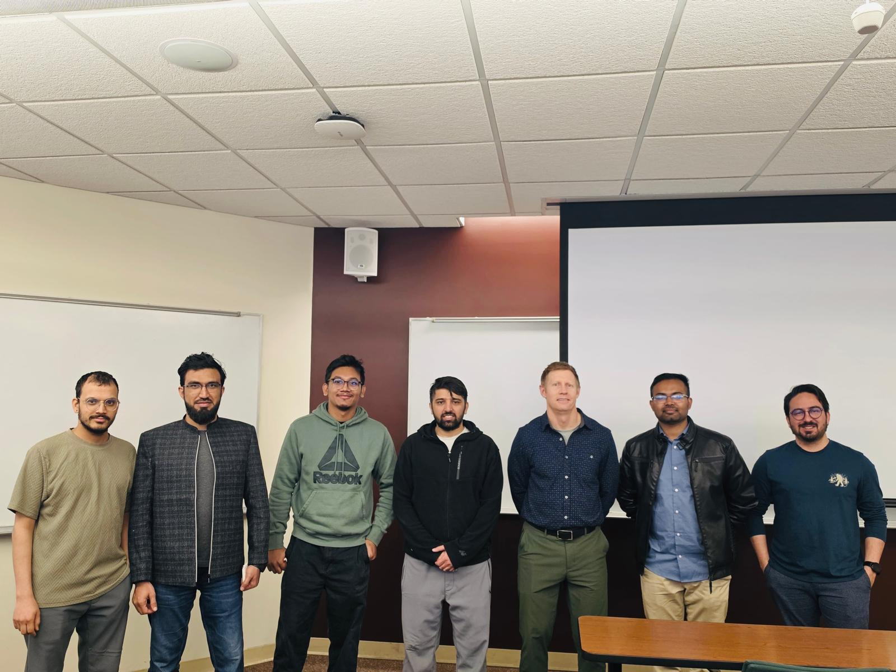
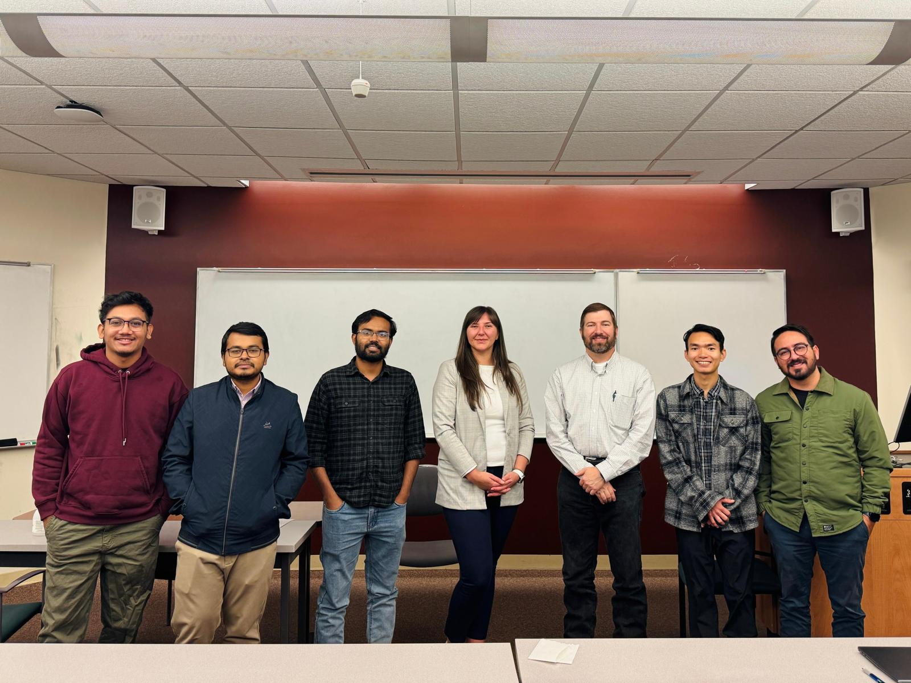

Interests
What I do when I am not reading bid tabulations: time outdoors with people I care about, and the professional community that keeps the research connected to practice.
Travelling with friends and family
Most of my time off goes to national parks in the Mountain West, usually on a long hike with friends or family along.



Industry collaboration
Site visits and campus events I organized or took part in through the ITE student chapter at the University of Wyoming, bringing practitioners and students into the same room.


